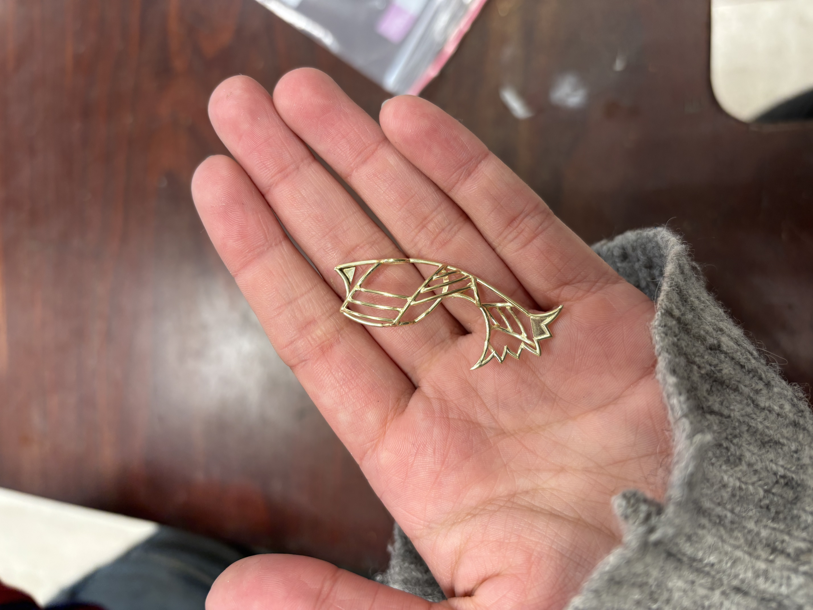

Zeemeermin staart draadhanger.
Deze zeemeermin staart is vervaardigd in 14 karaat goud en volledig driedimensionaal opgebouwd, waardoor het ontwerp een organische, vloeiende vorm krijgt. Het bestaat uit een draadstructuur met 3 verschillende arceringen. In het hart van de draad zijn drie gesoldeerde plaatjes aangebracht. Deze plaatjes vormen subtiele accenten die het ontwerp versterken en extra diepte creëren. Door de combinatie van arceringen, volume en de gesoldeerde elementen krijgt de staart een natuurlijke uitstraling.
